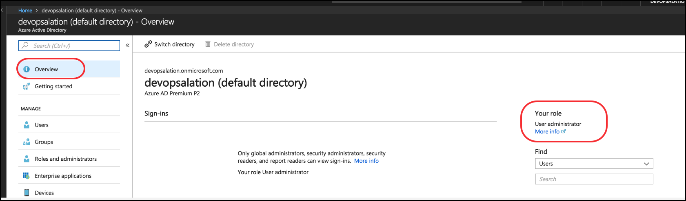
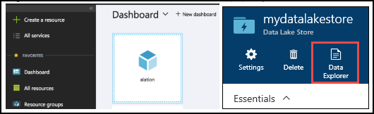
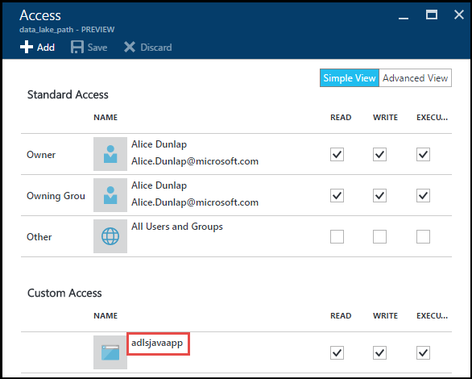

Azure Data Lake Storage (ADLS)¶
Azure Data Lake Storage (ADLS) is a data lake technology developed by Microsoft. It is built to the Hadoop Distributed File System (HDFS) standard and uses Azure Active Directory Authentication (AAD).
Creating an ADLS source¶
Step 1: Use the Azure portal to create an Azure Active Directory application and service principal that can access resources:¶
Log in to the Azure portal.
Click the top left corner of the portal and click My permissions. Click here to view complete access details for this subscription to verify the subscription is granted either the Owner role or User Administrator role.
Click Azure Active Directory on the left-hand navigation pane. Go to App registrations and select New application registration. Choose a name for the new application, select Web app / API as the application type and use
http://alation.comfor the sign-on URL.Select the application that you have created from the App registrations. Copy the Application ID (also known as client ID) and save it on the notepad.
Select Settings and click keys to generate an authentication key for this application. Choose a description and expiry duration for the key and select Save. This populates the value of the key under the Value column. Ensure that you copy this value and have it on a notepad, because you cannot see the value later.
Select Azure Active Directory on the left-hand navigation pane and select Properties. Copy the value of the Directory ID (Tenant ID) on a notepad.
To assign a role to your application, select Resource groups on the left-hand navigation and select any resource group (alation-dev). Select Access control (IAM) on the second left-hand navigation bar. Click Add and choose a Role (Reader). Enter the name of the application and click Save.
{kind=link}
Step 2: Service-to-service authentication with Data Lake Store using Azure Active Directory:¶
Log in to the Azure portal.
Open the Azure Data Lake Store account from the dashboard. Click Data Explorer.
Select the top level directory on the left-hand navigation bar and select Access in the File Preview blade. Click the Add icon to open the Add Custom Access blade.
Click Select User or Group and select the application you have created.
Click Select Permissions and select all of Read/Write/Execute and click OK.

{kind=link}
{kind=link}
Step 3: Service-to-service authentication with Data lake Store using REST API:¶
Using the tenant ID, client ID and auth key from the note, issue a POST request as follows using the curl command:
curl -X POST https://login.microsoftonline.com/<TENANT-ID>/oauth2/token -F grant_type=client_credentials -F resource=https://management.core.windows.net/ -F client_id=<CLIENT-ID> -F client_secret=<AUTH-KEY>
The response from the request should be as follows:
{"token_type":"Bearer","expires_in":"3599","expires_on":"1458245447","not_before":"1458241547","resource":"https://management.core.windows.net/","access_token":"<REDACTED>"}
Copy the access_token on the notepad.
Step 4: Filesystem operations on Azure Data Lake Store using REST API:¶
Using the tenant ID, client ID, and auth key from the note, issue a POST request as follows using a curl command. To list the folders in your data lake store, run the following curl command. Replace <REDACTED> with the access token and <yourstorename> with the name of your Data Lake Store:
curl -i -X GET -H "Authorization: Bearer <REDACTED>" ‘https://<yourstorename>.azuredatalakestore.net/webhdfs/v1/?op=LISTSTATUS’
If the command works successfully, use it to browse the ADLS from the command line to verify the structure of the filesystem. The ADLS instance is now ready to be cataloged in Alation.
Configuration in Alation¶
Add a new file system through the Sources > Add a File System page.
Choose the type as HDFS.
Ensure that the checkbox Use SSL is selected. Under the File System Connection section on the settings page of the File system, enter the Hostname and Port of the machine running ADLS.
Choose Active Directory Authentication under File System Authentication. Enter the Tenant ID, ClientID, and Client Secret to access the filesystem.
Optionally, add a list of path prefixes to sync. If you choose none, everything will be synchronized. It is useful to limit the synchronization to a small section of your system for the first time to test your configuration. This ensures quick synchronization and confirms the functioning of the new file system.
Click Run Extraction Now. Wait for a few seconds. The status is updated at the bottom of the page and displays that the extraction process is getting executed. It will take some time for this message to be displayed.
Troubleshooting¶
The job fails and shows an error message in the UI¶
If the extraction failed with an error, read the message and match it with the following categories.
Authentication Error¶
Check your credentials, try re-entering them or logging in through a different system.
Network Error¶
Confirm the Alation server has access to the internet, so it can reach the ADLS.
The job works but no files were synced¶
Confirm that the ADLS setup works correctly. Check for error messages in /opt/alation/site/logs/taskserver.log.
Check your path prefix filters. Ensure that the authenticated user has read permissions for the files whose metadata you like to extract.
I changed the filters and my old files are gone¶
This is the expected behavior. Only files that match your filters will show up in the catalog. If you do not want to disturb your existing data, add new filters and do not change the old ones. Your annotations to the old files will come back if you change the filters and re-synchronize.